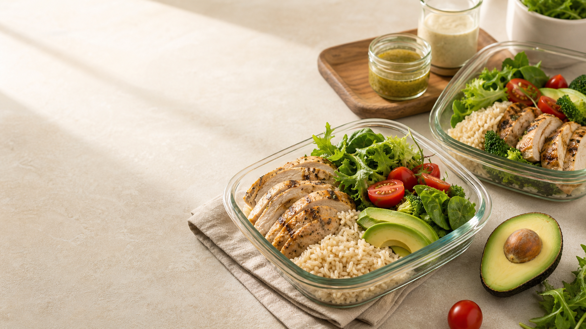

Ăn ngon · sống cân bằng
Nuôi dưỡng cơ thể, của Lyn mỗi ngày.
Công thức lành mạnh, meal prep đơn giản và những cảm hứng nhỏ để bạn yêu hơn nhịp sống của mình.
Bắt đầu từ căn bếp
Món ngon, không cầu kỳ
Gợi ý trong tuần
Chuẩn bị trước, thảnh thơi hơn.
Thực đơn 5 ngày với nguyên liệu quen thuộc và cách phối linh hoạt. Dành ít thời gian hơn trong bếp, nhiều thời gian hơn cho bạn.
Xem thực đơn
Góc sống khỏe